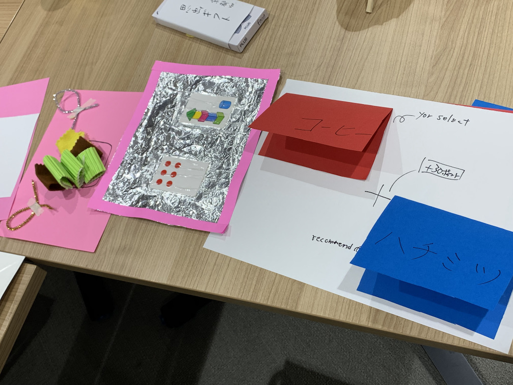
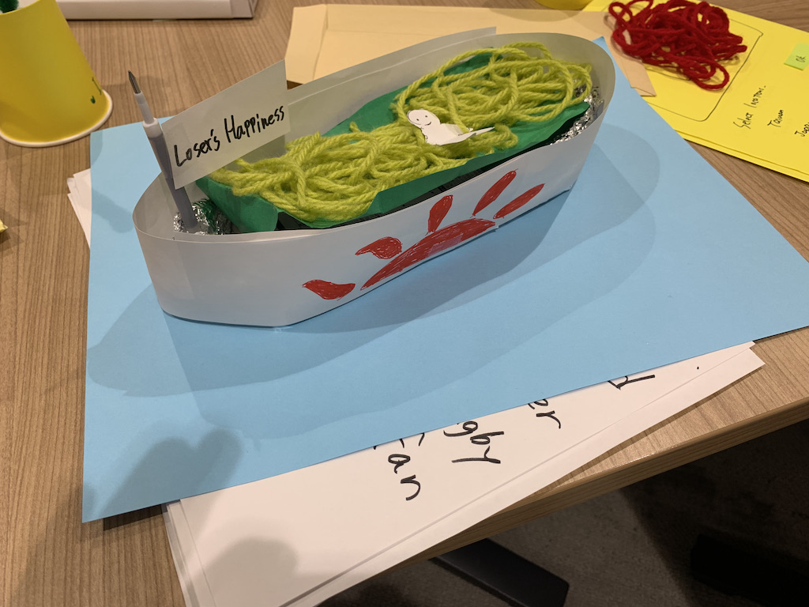
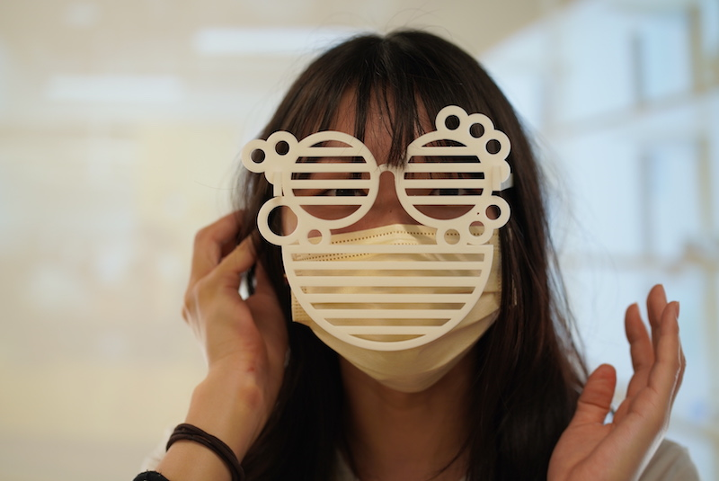
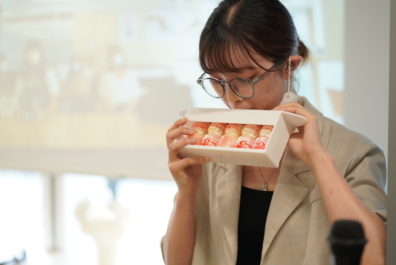
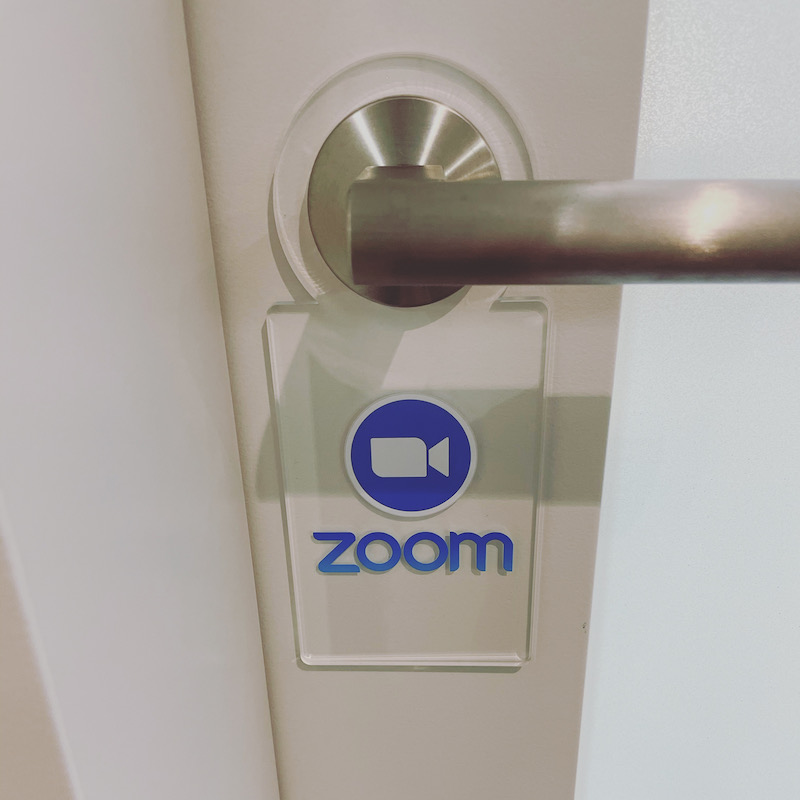

Design for Others
Ideation and Test(制作期間)
- まずは、グループでどのような問題を解決する製品を作るか確定してください。
- 各個人でグループで決めた製品プロトタイプ（完成度は高くなくていい）を作ってください。
この段階のプロトタイプレベル感

- できるだけグループで作ってきた実物を触りながら、それらを評価しもっとこうしたらいいのではないか、検討してください。
Assignment（指定日までの提出）
プロトタイプをデジファブを利用して作成し、下記の内容をHPに上げておいてください。
クオリティのレベル感は例の写真を参考にしてください。
あくまで目指すクオリティの参考なので、
思ったクオリティにできなくても完成させ、HPにあげてください。
今回の課題は成績で大きな割合をしてめているので、HPにアップされていないと成績に大きな影響が出ます。
- 自分達が取り組むことにした問題の説明（スケッチなども含める）
- 最終的に自分が作った製品プロトタイプの写真や動画(必ず使っているところを撮影する)
- 説明(今回はPOVやHMVが重要なので、ここに力を入れてください。)
- 使用機材
- できれば、同じ班のメンバーのDesign for Othersのページへのリンク
例（到達して欲しいレベル感）
■ZoomでVideoオンを要求された時の最後の抵抗
使用機材：3Dプリンター

■ヤクルトを５本パックのまま飲むホルダー
使用機材：3Dプリンター

「椿の花咲く頃」第6話
シーン１,
シーン2より洞察
■zoom中だからノックしないで
使用機材：レーザーカッター、UVプリンター

UVプリンターを使いたい人へ
UVプリンターフォーマット(VersaUV LEF-12i)用のaiファイル